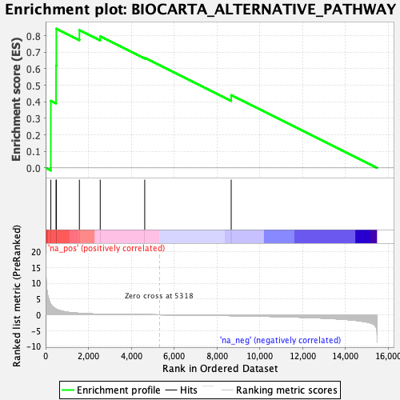
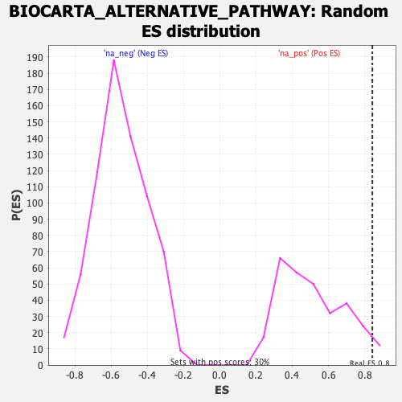

| | | Dataset | DE_genes |
| Phenotype | NoPhenotypeAvailable |
| Upregulated in class | na_pos |
| GeneSet | BIOCARTA_ALTERNATIVE_PATHWAY |
| Enrichment Score (ES) | 0.8427553 |
| Normalized Enrichment Score (NES) | 1.6419983 |
| Nominal p-value | 0.04054054 |
| FDR q-value | 0.27522087 |
| FWER p-Value | 0.877 |
Table: GSEA Results Summary

Fig 1: Enrichment plot: BIOCARTA_ALTERNATIVE_PATHWAY
Profile of the Running ES Score & Positions of GeneSet Members on the Rank Ordered List
| PROBE | GENE SYMBOL | GENE_TITLE | RANK IN GENE LIST | RANK METRIC SCORE | RUNNING ES | CORE ENRICHMENT | | 1 | C6 | | | 245 | 3.321 | 0.4061 | Yes |
| 2 | CFB | | | 489 | 1.800 | 0.6190 | Yes |
| 3 | CFP | | | 501 | 1.767 | 0.8428 | Yes |
| 4 | C3 | | | 1577 | 0.480 | 0.8342 | No |
| 5 | CFD | | | 2550 | 0.200 | 0.7967 | No |
| 6 | C7 | | | 4627 | 0.035 | 0.6669 | No |
| 7 | C5 | | | 8664 | -0.270 | 0.4402 | No |
Table: GSEA details [plain text format]

Fig 2: BIOCARTA_ALTERNATIVE_PATHWAY: Random ES distribution
Gene set null distribution of ES for BIOCARTA_ALTERNATIVE_PATHWAY